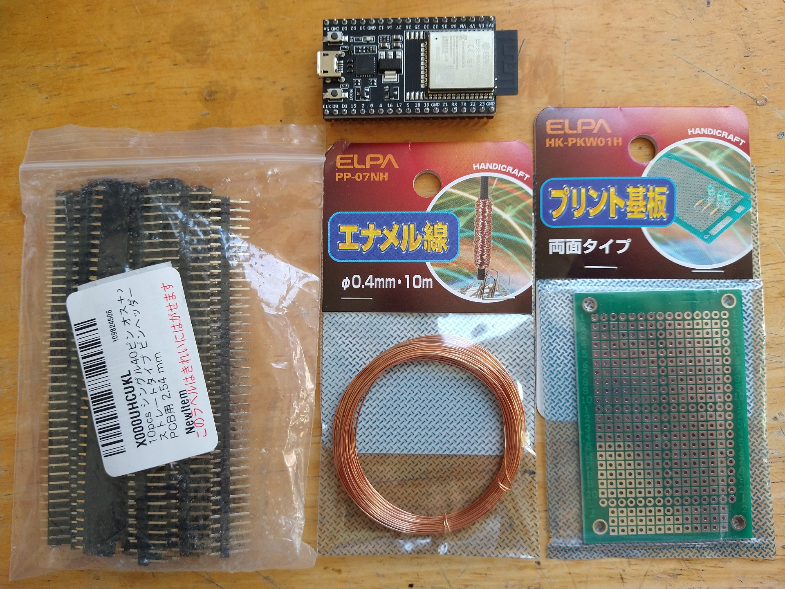

～ 目次 ～
1. 今回やったこと
今まではジャンパ線で回路の配線をしていて、見た目がかなりゴチャゴチャしてました(;‘∀’)
今回はユニバーサル基板を使って、ゴチャゴチャしてた配線をスッキリします！（一番下の画像みたいに）
2. シンプルにした回路図
下の画像がその回路図です。
前々回の回路と違って、サーボの電源がマイコン（ESP32）からESCの内臓UBECから供給しています。
こうするとサーボをよりパワフルに（供給電圧が5Vから6Vにアップ）動かせます。さらにマイコンに過剰な電流が流れないので、マイコンに優しくなって動作も安定しました。
3. 小型な回路を作る
回路図を参考に実際の回路を作っていきます！
3.1. 使ったもの
-
ESP32-WROOM-32E
-
ユニバーサル基板（ELPA:HK-PKW01H）
-
ピンソケットとピンヘッダ（Amazonのリンク）
-
エナメル線（ELPA:PP-07NH）
 ☝ 用意したもの
3.2. 作業手順
ピンソケット（凹メス側）とピンヘッダ（凸オス側）をユニバーサル基板に半田付けしてから、裏面にエナメル線で配線していきます。
ここまで完成したら、動作確認をしてみると良いと思います！（コネクタ差し込む向きの間違え、基板裏面のショートに注意）
4. 車体に取り付け
下の画像のような土台を作って、車体に作成した基板を固定しました。
下の画像で青いのはバネで、このバネでフレームの内側に部品を押し付けて固定します。
一番上の古墳みたいなのはESP32です(;^ω^)
次に設計した部品を3Dプリンタで作ります！ おっ、カブトムシが家に飛んできたぞ（うれしい）
穴は「2.5mmで印刷（実際は少し小さく仕上がる）⇒2.5mmのドリルで仕上げ⇒M3のネジをそのままねじ込む」という感じで組み立てました。
上手くはまらない部品は粗い金属やすりでゴリゴリ削りました（笑）
最後に車体につけてみます！
ジャンパ線の時とは違って、配線が抜ける心配が減って嬉しいです！
実験はかどりそう！！
5. サンプルファイル
3Dプリント部品のサンプルファイルをアップします！ FreeCADデータからstlメッシュ等をエクスポートして、3Dプリントができます。
ECX Barrage 1.9 を利用している方はそのまま使えます！（寸法を調整すればその他の車種に使えると思います）
～ FreeCADファイル(.FCStd) ～
～ ユニバーサル基板（ELPA:HK-PKW01H）に使えるカバー ～
今回の記事で紹介した、ユニバーサル基板（ELPA:HK-PKW01H）の裏面保護に使えるカバーの3Dデータをアップします。また、3Dプリント部品以外で作りたい方のために、寸法（一部）が入った2D図面も載せておきます。
-
☝ 基板裏面カバーの画像（3Dモデル）
 ☝ 基板裏面カバーの2D図面
☝ 基板裏面カバーの2D図面